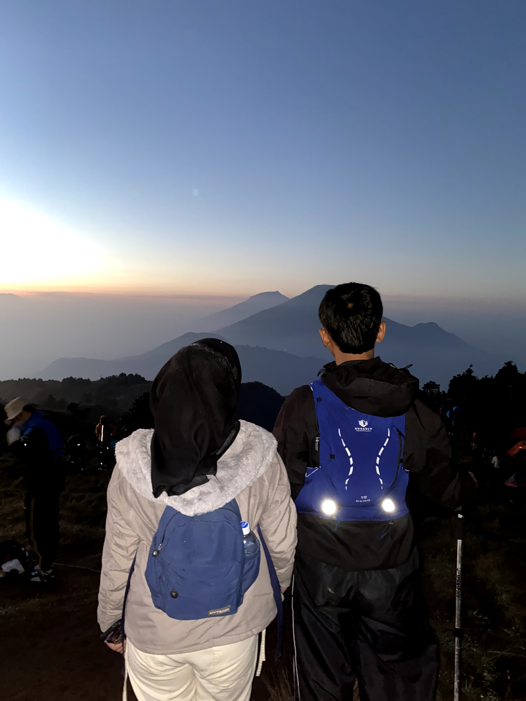
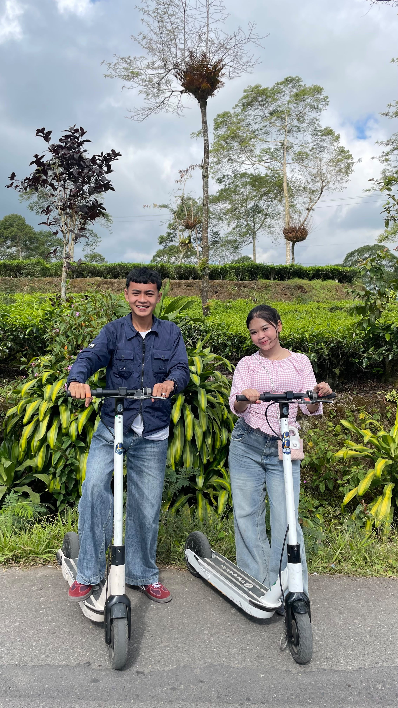
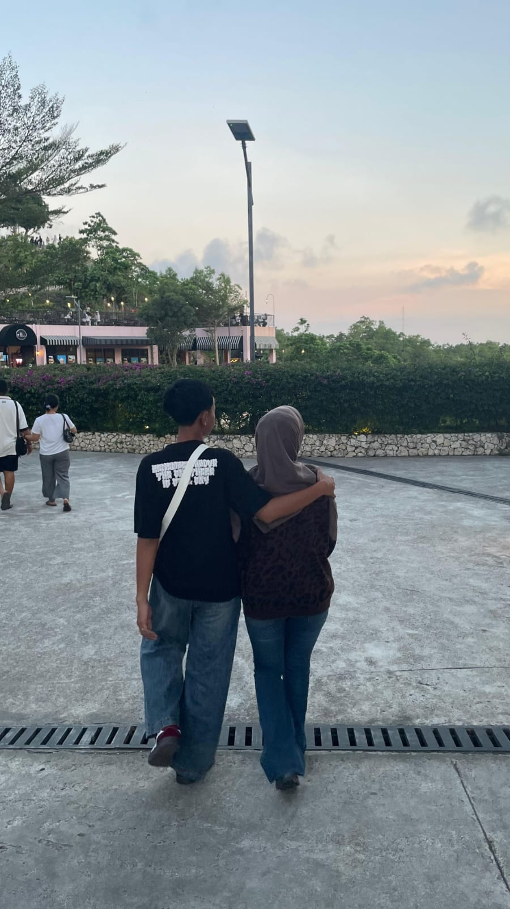
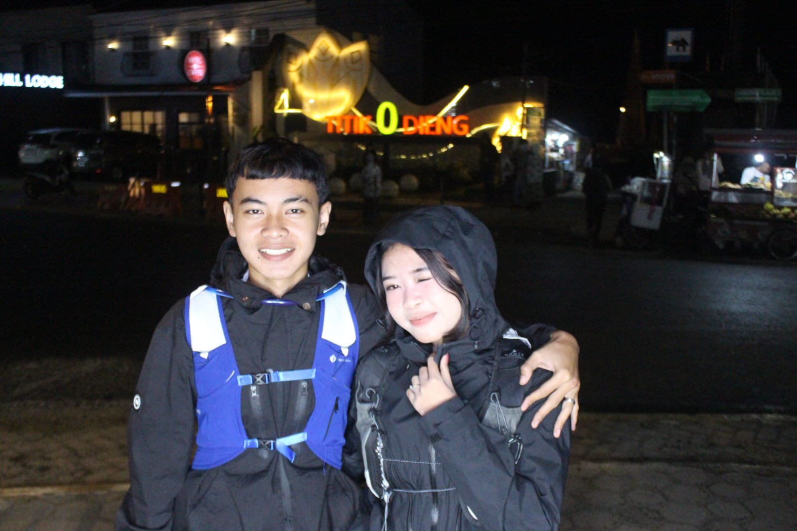
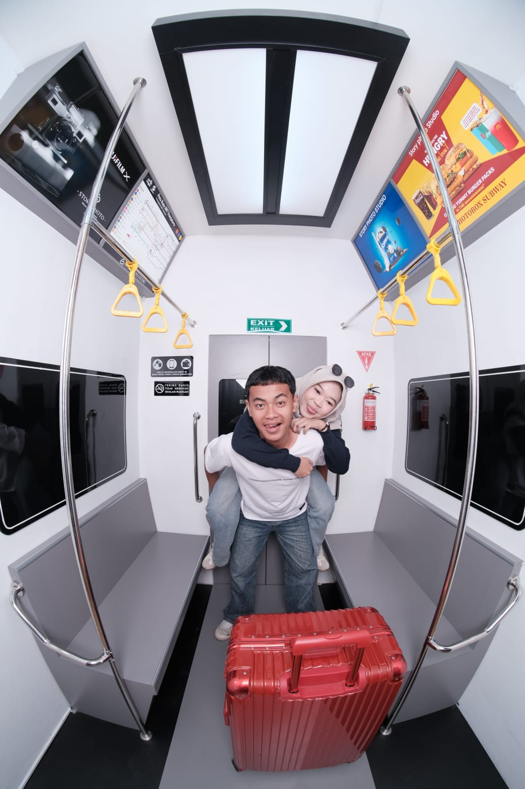
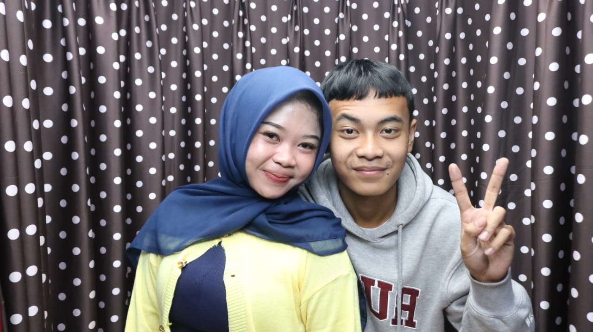
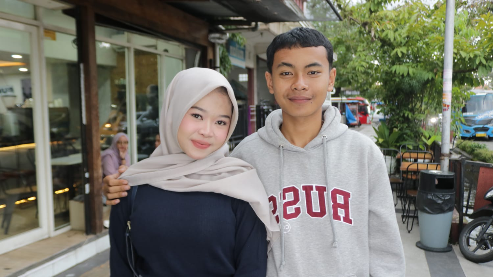
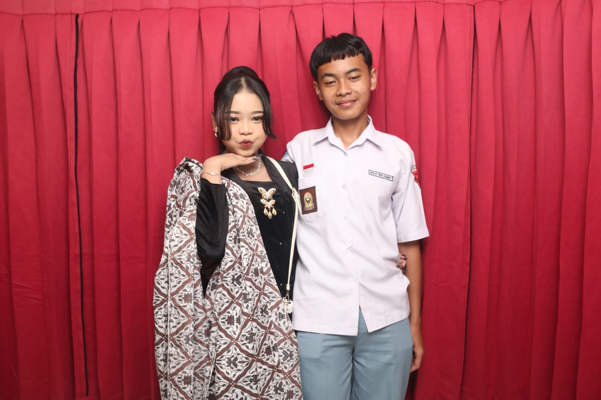
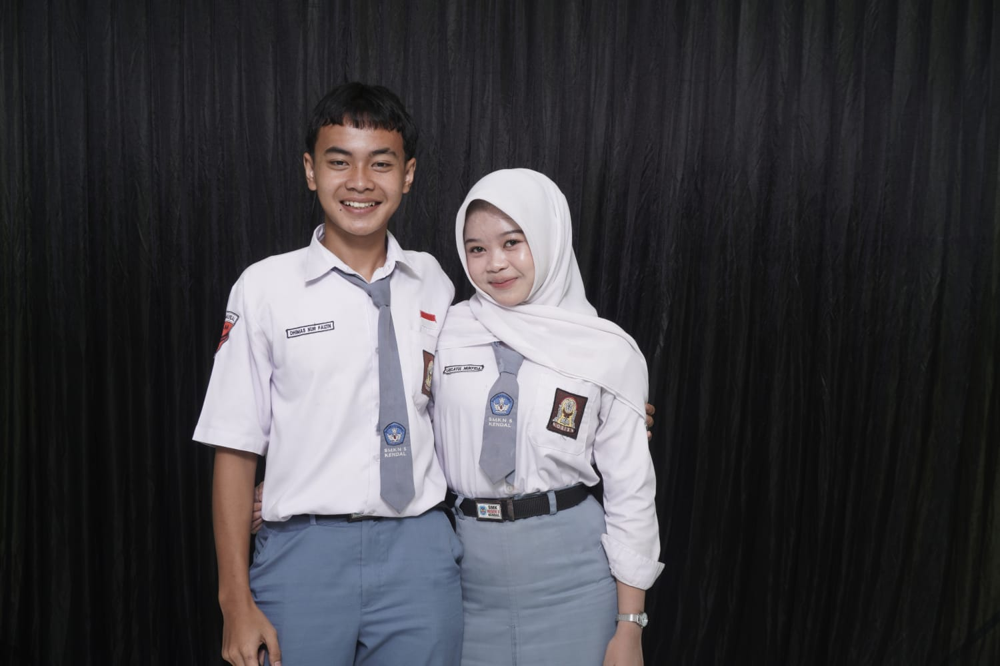
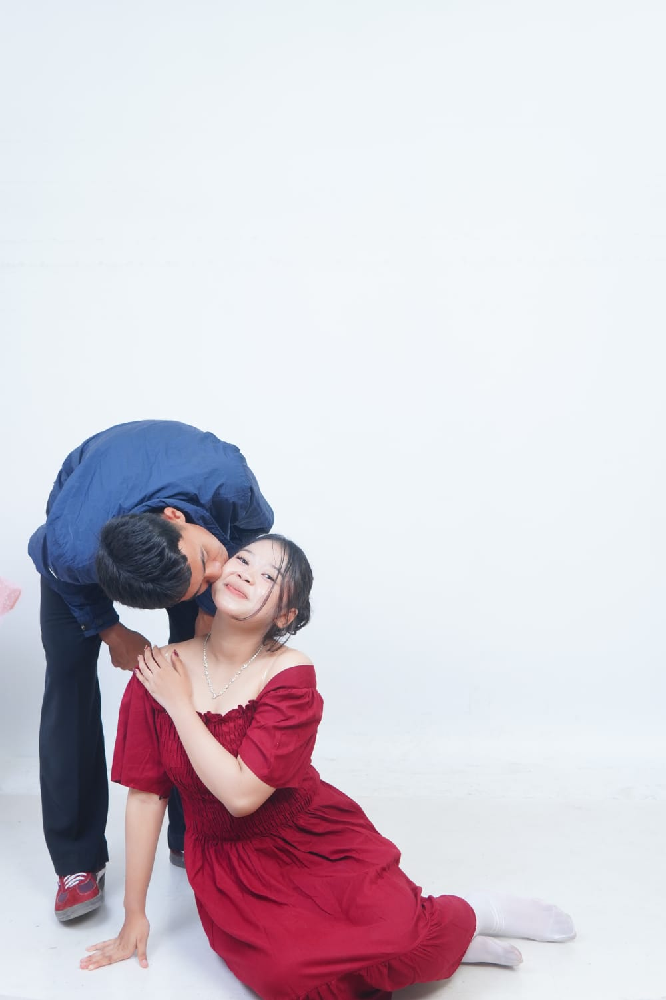

01
First date..
Hal yang ngga akan pernah kita lupain seumur hidup kita, kan? beruntung kita buat ini jadi berkesan, hehe.
aku buat web ini khusus buat kamu ♡
Aku mau kamu inget ini sebagai
perayaan kecil termanis seumur hidup kamu.
dibacaa yaaaa 💌
Happy birthday yaaaa sayaanggkuuuuu.
Sebenernya aku mau bilangg banyakkk bgtt hall sama kamuu sayaangg. tapi gacukup hehe kalo disini. salah satunya, aku mau bilang..
Terima kasih untuk setiap tawa, obrolan, perjalanan, dan hal-hal kecil yang mungkin kelihatannya biasa ajaa, itu malah jadi hal yang paling berkesan buat aku
Semoga di umur yang baru ini kamu selalu dikelilingi hal-hal baik. semoga apa yang kamu perjuangkan selalu jadi takdir kamu. aku mungkin gabisa bantu banyak sayangg, tapi aku pasti bantu kamu lewat doa :>
Terimakasiii banyaaa sudaa bikin akuu bahagiaa, bikin ketawa, ajakin aku jalan jalan ke tempat yang belum pernah aku datengin sama sekali.
Ssekali lagii, timaaciii yaa sayangg. untuk semua makanan enak yang kita cobain, untuk setiap lembaran rupiah yang kamu keluarkan, untuk semua inisiatif yang selalu kamu lakukan, untuk semuaaaaa bahagiaku yang selalu kamu usahakan, semoga Allah membalas semua kebaikan kamu dan menjadi derasnyaaa rezeki yang akan terus mengalir buat kamu yaa sayangg
i lovee youu so much sayanggg.
dari fida, yang selalu sayang kamu. ♡
mini digital scrapbook: made by fida 📷
Klik foto untuk melihatnya lebih besar.

Hal yang ngga akan pernah kita lupain seumur hidup kita, kan? beruntung kita buat ini jadi berkesan, hehe.

Sesek nya masih kerasa bgtt sayaangg. itu pertama kali aku nangis karna sedih level max tahun ini

Ternyata jogja juga punya kenangan tentang kitaa yaa? hmm disini juga aku nangisss..
album khusus 📸
Enam potongan kecil dari cerita kita yang masuk ke core memory aku..

01. Salah satu photobooth kita yang jadi favorit aku hehehe

02. Tempatnya ketcyilll tapi kameranyaa worth it!

03. Photobooth terbaruu kitaa yayyy

04. Ini photobooth di depan kopi berry, skrg booth nya uda gaada. beruntung kita uda kesanaa!

05. Semoga kita bisa pasang foto ini di jalan masuk pelaminan yaa..

06. Dan semogaaaaaaaa masih banyak frame selanjutnya setelah ini. ♡
hal-hal kecil tentang kamu 💙
Tiga hal kecil yang aku simpan diam-diam. Klik satu-satu ♡
our little maps 🗺️
Klik titiknya untuk membuka cerita kecil.
lagu ini punya cerita taauuuu! 🎧
"Lagu ini, aku dedikasikan untuk kamu."
aku pilih lagu ini karena dari pertama denger, aku langsung ngerasa vibesnya tuh kamu banget. soft, tenang, tapi somehow bikin aku nyaman. 🍯 terus aku kepikiran, kayaknya lucu deh kalau lagu ini jadi salah satu lagu yang nanti setiap kamu denger, kamu inget aku. bukan karena lagunya punya cerita yang sama persis kayak kita, tapi karena mulai sekarang lagu ini udah punya sedikit bagian dari cerita kita. jadi nanti kalau kamu dengerin ini lagi, inget yaa... pernah ada seseorang yang sengaja masukin lagu ini ke hadiah ulang tahun kamu karena pengen bikin satu kenangan kecil yang bisa kamu simpen. 🤍
buka kalau... 💌
Kamu bisa buka ini kapan aja sayaang.
postcard 🎟️
postcard
make a wish duluuuu 🕯️
Buat satu harapan. aku boleh tau gak? hehe ✨
Harapan kamu bakal di kirim ke langit!
halaman rahasia
Masukkan password untuk membuka halaman terakhir.
Petunjuk: tanggal kamu lahir!
yayyyy! kamu berhasil bukaa sayanggg.
Kalau kamu sampai di sini, berarti kamu udah berhasil buka semua bagian kecil yang aku siapin buat kamu. Mungkin kelihatannya cuma website sederhana, cuma beberapa foto, tulisan, dan cerita-cerita kecil. Tapi di balik semuanya itu, ada banyak waktu, pikiran, dan perasaan yang aku masukin khusus buat kamu.
Aku nggak tahu nanti kamu bakal inget bagian yang mana dari website ini. Mungkin fotonya, mungkin tulisan-tulisannya, atau mungkin malah hal random yang aku masukin di tengah-tengahnya... hehe
Tapi aku harap, suatu hari nanti kalau kamu buka ini lagi, kamu bisa inget kalau pernah ada seseorang yang dengan seneng hati nyiapin semua ini cuma buat bikin kamu tersenyum di hari ulang tahun kamuuuuu.
makasih yaaaa, sayangg.
Makasih karena udah hadir di hidup aku dan jadi bagian dari banyak cerita yang sampai sekarang masih aku simpan baik-baik. Dari hal-hal kecil yang mungkin menurut kamu biasa aja, sampai momen-momen yang akhirnya jadi kenangan yang berarti buat aku.
Kita mungkin nggak selalu punya hari yang sempurna. Kadang ada salah paham, ada kesel, ada capek, ada hari di mana semuanya terasa nggak gampang. Tapi justru dari semua itu aku belajar kalau hubungan bukan cuma tentang ketawa dan bahagia terus. Ada proses buat saling ngerti, saling belajar, dan tetap memilih buat memperbaiki semuanya.
Aku nggak bisa janji kalau ke depannya semuanya bakal selalu mudah. Tapi aku berharap, di antara banyak hal yang bakal kita lewatin nanti, kita tetap punya banyak alasan buat ketawa bareng, cerita hal random, bikin kenangan baru, dan saling dukung satu sama lain.
Di umur kamu yang baru ini, aku cuma pengen kamu punya banyak hal baik.
Semoga kamu selalu sehat, selalu dikelilingi orang-orang yang sayang sama kamu, dimudahkan dalam setiap urusanmu, dan bisa mencapai hal-hal yang selama ini kamu pengenin. Semoga kamu juga bisa lebih bangga sama diri kamu sendiri, karena kamu udah sampai sejauh ini dan masih terus berusaha.
Semoga tahun ini jadi tahun yang lebih baik buat kamu. Semoga ada lebih banyak tawa, lebih banyak kesempatan, lebih banyak hal yang bisa kamu banggakan, dan tentunya lebih banyak kenangan yang bisa kita simpan.
Dan semoga, dari sekian banyak hadiah yang kamu terima hari ini, website kecil ini bisa jadi salah satu hal yang bikin kamu senyum dan mikir, "ada ya orang yang se sayang ini sama aku." jawabannya, satu. ada.
Once again, happy birthday sayangkuuuuu
Semoga tahun ini jadi salah satu tahun terbaik kamuu.
Love you. ♡